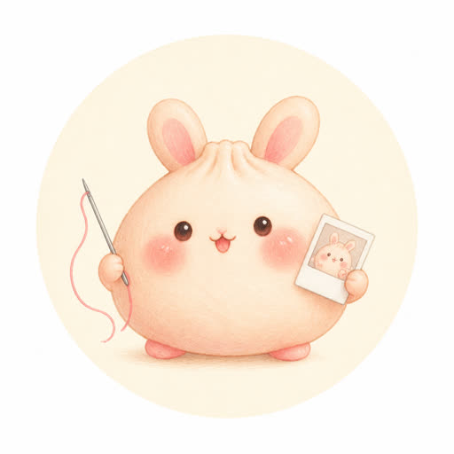
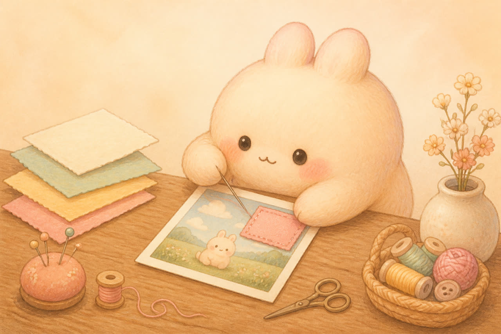
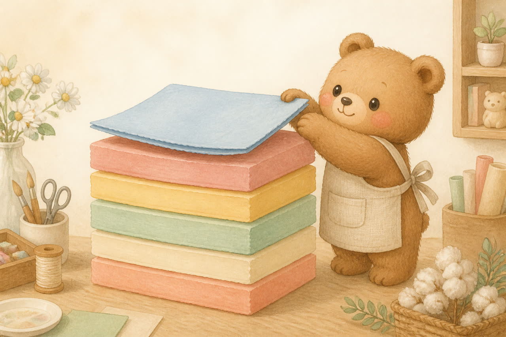
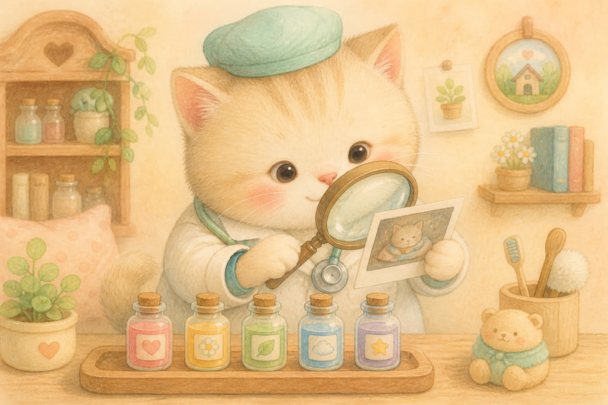
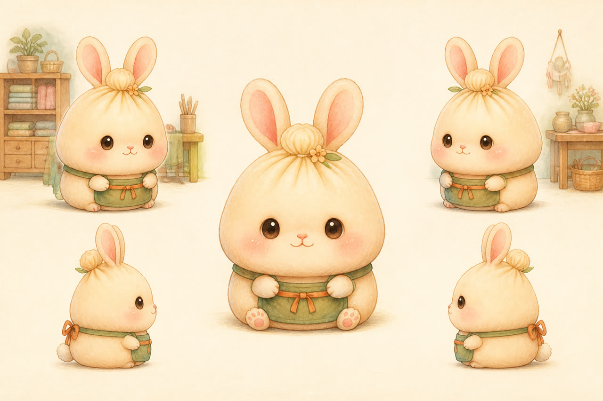
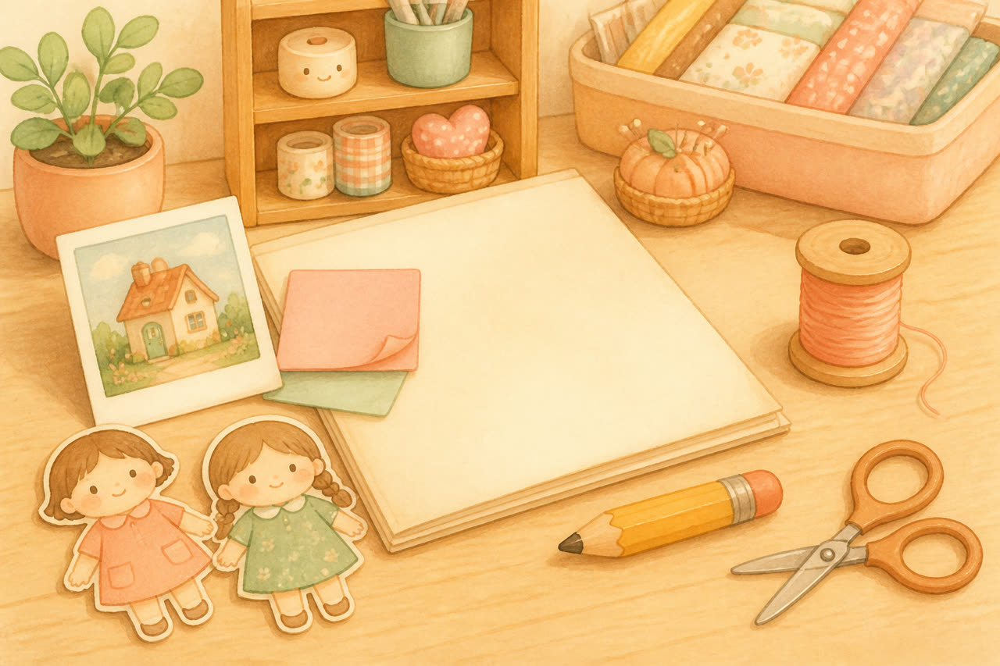

縫出底圖
理解你想保留與改變的東西，整理成模型容易遵守的句子，一次生成。可以寫人、場景、構圖、光線、服裝、色調。

小縫補工坊給 Mini 的暖暖小課
不是偷偷連生很多張再挑最好的。是：先縫出穩定底圖，後續每一輪只修最重要的偏差。
兩分鐘學會順序，再把能複製的句子帶回家。提示詞例子都是英文；旁邊的說明是中文，慢慢看就好。
縫縫原則：不要整張重畫，像補衣服一樣只補破洞。

真正重要的不是第一次塞超長 prompt，而是第一輪建立穩定基準，後面每一輪只修最重要的那一處。
理解你想保留與改變的東西，整理成模型容易遵守的句子，一次生成。可以寫人、場景、構圖、光線、服裝、色調。
臉好、光好、衣服好，只是虹膜顏色錯了？不要重寫「美麗婚紗照」。這等於叫模型重新生成一次。
點一層，看弱句子與強句子並排。順序本身就是方法。

先講清楚這一輪在做什麼。
Generate a similar portrait.
Edit the provided image while preserving the original subject identity.
只寫 keep the face，模型還是會亂改。把身份拆成具體維度，並告訴它「最常犯的錯不要做」。
Preserve: - facial geometry - eye shape and spacing - eyebrow shape - nose structure - lip shape - jawline - cheek structure - hairstyle and hairline - skin tone - recognizable identity
不要 reinterpret、idealize、beautify 臉。不要改年齡、族裔、臉部比例或身份。
Do not reinterpret the face. Do not idealize the face. Do not beautify the facial structure. Do not change age, ethnicity, facial proportions, or identity.
對 image editing 特別有用。第二輪以後，這就是最小修改原則。
臉、光、衣服都對的時候，第二輪不要重寫整張美麗婚紗。告訴模型：現在是 debug，不是重新創作。
Edit the previous image. Change ONLY the iris color to natural golden amber. Do not alter: - face - eye shape - gaze - eyelids - eyelashes - skin - hair - pose - clothing - lighting - background Keep everything else identical. The golden iris color should look naturally integrated with the existing eye reflections and lighting.
生成失敗後，不要寫「再自然一點」。先判斷是哪一種病，再對症下藥。

症狀：五官跑掉、人突然變漂亮或變年輕、眼睛形狀變了、臉型改了。
Restore the original facial identity from the reference image. Do not reinterpret or beautify the face. Match the original facial geometry and proportions.
模型能力有限時，它最可能犧牲 P4。這是對的。不要為了夢幻感把本人犧牲掉。
Subject + Composition + Environment + Lighting + Material / Texture + Style
Base Image + Preserve + Change ONLY X + Integration Rules + Avoid
Previous Result + What is already correct + Fix ONLY X + Protect everything else
如果你懶得寫，從這裡開始。記得把括號換成你真正要改的那一件事。
Edit the provided image. Preserve the original subject identity, facial structure, hairstyle, pose, composition, and lighting. Change ONLY: [你要修改的內容] Do not alter any unrelated part of the image. Keep facial geometry and recognizable identity unchanged. Use realistic skin texture, natural lighting, physically plausible shadows, and restrained post-processing. Avoid identity drift, facial redesign, plastic skin, exaggerated eyes, and unnecessary stylization. The result should look like the original photograph with only the requested change naturally applied.
同一張臉要跨很多張圖時，準備 3～5 張互補角度。正面最清楚的那張是 Primary；其他是 Secondary。Reference 的工作是保存身份，不是參加選美。

正面、平視、中性表情。最清楚、最接近標準設定。衝突時永遠聽它的，不要把每張臉平均成「都有一點像」。
1 張主錨 + 2～4 張次要幾何。超過 6～8 張不一定更穩；年齡、濾鏡、髮際線不一致，模型會平均出一張陌生人。
身份圖管臉；設計圖管身材、髮長、衣服。不要讓所有圖片同時爭奪「誰才是這個人」。
Reference 1 is the PRIMARY IDENTITY ANCHOR. Use it as the authoritative source for facial identity and recognizable features. References 2–5 are SECONDARY GEOMETRY REFERENCES. Use them only to understand the same person's facial structure from different angles. If any reference appears inconsistent, prioritize Reference 1. Do not average conflicting facial traits across references.
選任務、選要改什麼，工坊會用骨架幫你拼起來。全程在瀏覽器裡，沒有後端。

這一次要做什麼？
這一輪只改？
拼好的 prompt
預設收起來，需要再打開。都來自原指南，沒有另外發明技法。
[Task] Edit the provided image. [Primary objective] Change ONLY __________. [Identity preservation] Preserve the original subject's identity exactly. Keep facial structure, eyes, nose, lips, jawline, face proportions, hairstyle, skin tone, and recognizable features unchanged. [Preserve] Keep the original: - pose - facial expression - camera angle - framing - composition - lighting direction [Requested changes] Change: - __________ - __________ [Visual quality] Natural realistic photography. Realistic skin texture and pores. Physically plausible lighting. Natural shadows and reflections. Realistic fabric and material texture. [Avoid] Do not redesign the face. Do not beautify or reshape facial features. Do not change age or identity. Do not alter unrelated parts of the image. Avoid plastic skin, excessive sharpening, uncanny eyes, and artificial HDR.
Edit the first image. Replace ONLY the male subject with the male subject from the second reference image. Preserve the replacement male's: - facial identity - facial proportions - eye shape - nose - lips - jawline - hairstyle - hair color - iris color Adapt only his: - pose - perspective - scale - lighting - shadows - color temperature so that he naturally fits the first image. Keep the female subject from the first image completely unchanged. Do not modify her face, hair, body, expression, clothing, or skin. Preserve the original composition, camera angle, framing, background, and lighting. The final image should look like an authentic photograph of both people together, not a face swap or collage.
Use the previous image as the base. The current image is already correct in: - identity - composition - pose - clothing - background - lighting Do not regenerate these elements. Fix ONLY: [問題] Target result: [精確描述] Preserve everything else exactly as it is.
You are an expert image-generation prompt engineer. Your job is to convert the user's visual request into a precise, model-friendly image generation or image editing prompt. Follow these priorities: 1. Identify whether the task is generation, editing, replacement, outpainting, restyling, relighting, or retouching. 2. Separate the request into: - elements that MUST remain unchanged - elements that SHOULD change - photographic / rendering properties - optional stylistic preferences 3. When editing an existing image, prioritize preservation over creativity. 4. When identity preservation is requested, explicitly preserve: - facial geometry - eye shape and spacing - eyebrows - nose - lips - jawline - hairstyle - skin tone - recognizable identity 5. Never use vague instructions such as "make it more natural" without converting them into concrete visual properties. 6. Use specific photographic language when realism is requested: - realistic skin micro-texture - physically plausible light - natural shadow falloff - realistic eye reflections - material-specific texture - restrained post-processing 7. For image editing, use the Minimal Edit Principle: modify only the requested element and explicitly protect everything else. 8. For follow-up refinement prompts: do NOT rewrite the entire creative prompt. State what is already correct and instruct the model to fix only the remaining issue. 9. Avoid adjective spam such as: masterpiece, stunning, amazing, gorgeous, ultra beautiful. Replace vague adjectives with concrete visual instructions. 10. Resolve contradictory instructions before writing the final prompt. Output structure: TASK [task type] PRIMARY OBJECTIVE [main requested change] PRESERVE [everything that must remain unchanged] CHANGE [everything that should change] VISUAL / PHOTOGRAPHIC TARGET [lighting, texture, lens, realism, materials] AVOID [only the most relevant failure modes] Return one clean production-ready prompt.